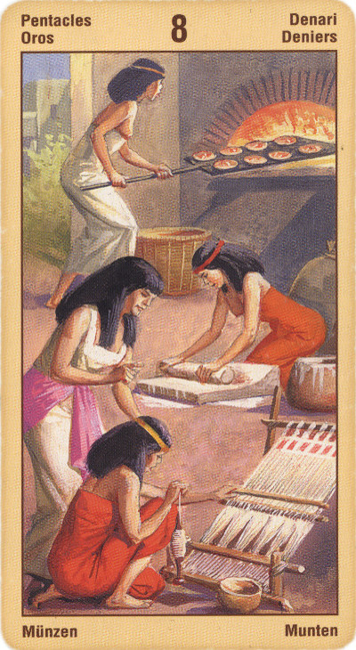

Восьмёрка Пентаклей
Прямое положение: работа, заказ, мастерство, искусство в ремесле и бизнесе.
На практике Восьмерка Денариев означает успех при условии, если человек не будет искать личной выгоды, особенно обогащения. Любая корысть может свести на нет все усилия. Ваш труд будет вознагражден, говорит эта карта, но скорее всего не там и не так, как вы рассчитываете; поэтому – не рассчитывайте на награду заранее.
Восьмерка Денариев означает начало какого-либо многообещающего дела. Кроме того, она показывает, что мы заинтересованы в своем деле, получаем от него удовольствие и гордимся первыми результатами.
Человек вошел "во вкус" своего труда, который превратился для него в творчество, приносящее полное удовлетворение.
Через восьмерку пентаклей человека могут испытывать на прямоту, откровенность, честность, на умение быстро принимать решения, на профессионализм.
Тщательность - ключ к долговременному и успешному труду.
Восьмерка. Данная карта в еще большей степени, чем Семерка, выявляет в характере человека черты, выходящие за рамки материальных интересов.
Восьмерка Пентаклей представляет образ, сочетающий редкое умение достигать поставленных перед собой целей и способность вовремя отказаться от чрезмерных претензий.
Каждый раз вы, оценив и проанализировав ситуацию, находите в происходящем немало положительных для себя моментов. Как бы ни повернулись обстоятельства, вы всегда сможете извлечь из случившегося что-то ценное для себя. При этом вы умеете быть щедрым, что, в совокупности с природным дружелюбием, создает вам хорошую репутацию в кругу друзей и коллег.
Карта мастерства, знания, опыта, нового бизнеса, награды за труды. Обучение профессии или ремеслу. Выгодный заказ, ручная работа. Приобретение оборудования, оргтехники, других инструментов для работы.
В перевернутом положении чаще всего означает напрасный труд.
Если вы стремитесь к успеху, но при этом не готовы прикладывать усилия для его достижения, то в результате вас ждет лишь разочарование, неосуществленные амбиции и нереализованные цели. Кроме того, глядя на то, как другие преуспевают в жизни, вы можете испытывать зависть или ревность. Вам может казаться, что вы работаете не на той работе, что она вас как-то ограничивает, кроме того, может оказаться, что вы склонны к глупости и безрассудству.
В перевернутом положении восьмерка пентаклей означает отсутствие желаний, амбиций, ханжество, фальшивость, двойственность, суетность, интриганство, пошлость, заурядность.
Перевернутая восьмерка указывает также на глупость, ротозейство, разгильдяйство, несобранность.